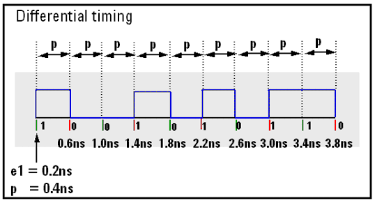
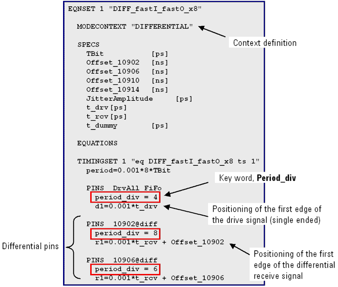

Period divisor (period_div)
You can set the keyword period_div to the values -1 (for standard pins), 2, 3, 4, 6, 8 (only for fast pins).
The values of period_div are the same as the X-modes.
The period specified by the keyword "period" divided by the value of period_div yields the period of the high-speed signal ("p" in the figure below).

As you can set different X-modes (period_div) for each pin, the period_div is placed between the pin definition and the edge definition (see the example below).
When you connect an equation set with a wavetable in a specification, the period_div statement in the timing set must equal the length of the action sequences in the wavetable.
Note also that the period_div for a specific pin must be the same within the equation set. This means the pin cannot have different period_div in different timing sets of the same equation set.
The reason for this can be explained as follows:
Changing the timing set means changing the edge position of specific actions. However the associated wavetable does not change, this means that the waveform shapes per pin also do not change. However, a change in the period_div for a specific pin would also required a change of its waveforms stored in the wavetable.

You need two parameters to specify the timing of a differential signal in a timing equation set:
- The position of the first edge (d1, r1).
The corresponding key word in the timing equation set is e1 for receive and drive edges, or d1 for drive edges, or r1 for receive edges.
- The X mode factor defined by period_div.
For Pin Scale applications, the period_div is located in the PINS section of the timing equation set because it works on a "per-pin" basis. In NP applications, however, the same keyword works on all pins at once, hence, for NP applications, period_div must be located in the EQUATIONS section of the timing equation set.
Functional changes
- Introduced in SmarTest 7.5.3